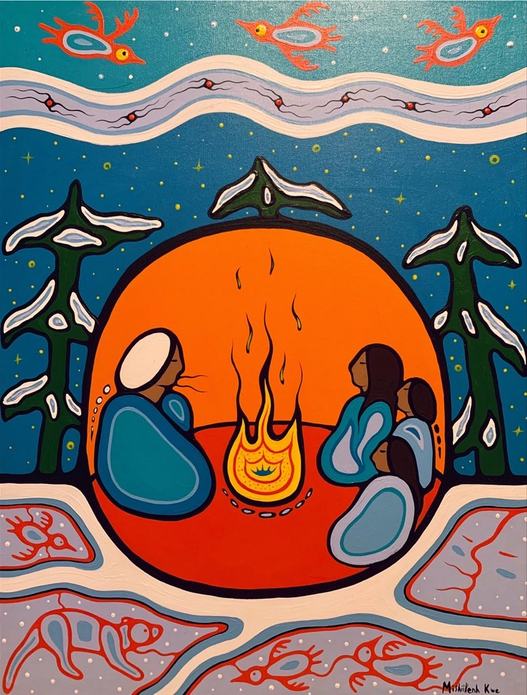

Storytelling: Indigenous Ways of Teaching and Learning
This draft site explores storytelling as an Indigenous approach to teaching and learning. Stories are not simply entertainment or literacy activities. In many Indigenous traditions, stories carry knowledge about relationships, responsibilities, land, identity, and community.
Draft note: This site is created for educational purposes. It does not represent the teachings or cultural protocols of any specific Nation. Readers are encouraged to learn from local communities, Elders, and Knowledge Keepers whenever possible.
Writing guidance for authors: This homepage should briefly introduce the purpose of the website and explain why storytelling matters as an Indigenous approach to teaching and learning. The goal of this page is to frame the inquiry and guide readers to the main sections of the site rather than provide a detailed literature review.
Start here: Respectful Practice →

What is storytelling here?
Explore how storytelling functions as living knowledge and a way of learning, rather than simply a classroom story activity.
Explore storytelling →Storytelling as pedagogy
Learn how stories support belonging, ethical reflection, and knowledge transmission across generations.
Explore pedagogy →Classroom-friendly ideas
Review possible ways storytelling can be respectfully integrated into early childhood and classroom learning environments.
Explore activities →Key Scholarly Sources
This website draws on research from Indigenous education scholars who explore storytelling, relational learning, and respectful engagement with Indigenous knowledge.
Full references are available on the Bibliography page.
- Archibald, J. (2008). Indigenous storywork: Educating the heart, mind, body, and spirit. Canadian Journal of Native Education, 31(1), 72–92. Read article
- Battiste, M. (2002). Indigenous knowledge and pedagogy in First Nations education: A literature review with recommendations. Canadian Journal of Native Education, 26(2), 144–160. Read article
- Iseke, J. (2013). Indigenous storytelling as research. International Review of Qualitative Research, 6(4), 559–577. Read article
- Simpson, L. B. (2014). Land as pedagogy: Nishnaabeg intelligence and rebellious transformation. Decolonization: Indigeneity, Education & Society, 3(3), 1–25. Read article
- Wilson, S. (2001). What is Indigenous research methodology? Canadian Journal of Native Education, 25(2), 175–179.